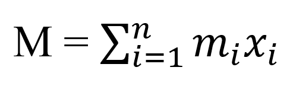

MẶT KHOA HỌC, VẬT LÝ VÀ KỸ THUẬT
Một số ứng dụng của toán cao cấp trong lĩnh vực này:
- Thiết kế và kiểm tra tính động của các cấu trúc kỹ thuật, như cầu, nhà cao tầng, đập thủy điện, v.v.
- Nghiên cứu về sóng âm, sóng điện từ, sóng siêu âm và các hiện tượng sóng khác.
- Phát triển và cải tiến các phương pháp tối ưu hóa, như tối ưu hóa đường đi, tối ưu hóa mô hình, tối ưu hóa chế độ điều khiển.
Một Số Ví Dụ
Áp suất và Lực thủy tĩnh
- Trong các lần lặn biển, các thợ lặn biển sâu nhận ra áp suất nước tăng khi họ lặn sâu hơn. Và nguyên nhân là trọng lượng của nước phía trên họ tăng.
- Nói một cách tổng quát, giả sử nhúng một tấm kim loại mỏng ngang có diện tích A m2 vào một dung dịch có tỉ trọng ρ kilogam/ m3 tạo độ sâu d mét dưới bề mặt dung dịch thì khối dung dịch nằm ngay phía trên tấm kim loại có thể tích V = Ad, vì vậy khối lượng của nó là m = ρV = ρAd. Khi đó, lực do dung dịch tác động lên tấm kim loại là:
- Áp suất P tác dụng lên tấm kim loại được định nghĩa là lực trên một đơn vị diện tích:
F = mg + ρgAd
P = F/A=ρgd
Đơn vị đo áp suất theo hệ đo lường SI là newton trên m2 mà được gọi là pascal (1N/m2 = 1Pa). Vì đây là đơn vị nhỏ nên ta hay dùng kilopascal (kPa). Chẳng hạn như vì dung lượng nước là ρ = 1000 kg/m3, nên áp suất tại đáy hồ bơi sâu 2m là:
P = ρgd = 1000 kg/m3 × 9.8 m/s2 × 2m
Nguyên lý quan trọng của áp suất chất lỏng được kiểm chứng qua thực nghiệm là tại điểm bất kì trong lòng chất lỏng, áp suất như nhau ở mọi hướng. Do đó áp xuất theo một hướng bất kì tại độ sâu d trong lòng chất lỏng có mật độ khối ρ được tính bởi công thức:
P = ρgd = δd
Momen tĩnh và Tâm khối lượng
Ở đây mục tiêu chính của chúng ta là tìm hiểu P mà tại đó một tấm mỏng có hình dạng bất kì nằm cân bằng ngang như trong hình. Điểm này được gọi là tâm khối lượng (hoặc trọng tâm) của tấm mỏng.
Đầu tiên ta xem xét tình huống đơn giản hơn được minh họa trong hình trên, trong đó hai khối m1 và m2 được gắn vào hai bên của một thanh có khối lượng không đáng kể và cách điểm tựa các khoảng d1, d2 thanh đòn bẩy sẽ cân bằng nếu:
m1d1 = m2d2
Đây là một kết quả thực nghiệm được khám phá bởi Archimedes và được gọi là Định luật đòn bẩy.
Giả sử thanh ngang nằm dọc theo trục x với m1 tại x1 và m2 tại x2 và tâm khối lượng tại x ̅. Nếu so sánh hình 6 và 7 sẽ thấy rằng d1 = x ̅ – x1 và d2 = x2 - x ̅
Các số m1x1 và m2x2 được gọi là momen của khối lượng m1 và m2 (tương ứng với gốc) và phương trình 3 nói rằng tâm khối lượng x ̅ có được bằng cách cộng momen của các khối lượng và chia cho tổng khối lượng m = m1 + m2
Tổng quát: nếu ta có hệ n chất điểm có khối lượng m1, m2,...mn được đặt tại các điểm x1,x2...xn trên trục x, ta có thể chứng minh tương tự rằng tâm khối lượng của hệ được đặt tại:

Trong đó: m = ∑m_i là tổng khối lượng của hệ và tổng các momen thành phần
được gọi là momen của hệ quanh gốc. Khi đó phương trình 4 có thể được viết lại thành mx ̅ = M, công thức này nói lên được nếu tổng khối lượng được cho là tập trung tại tâm khối lượng x ̅ thì momen của nó sẽ giống hệt với momen của hệ thống.
Bây giờ, ta có thể xem xét một hệ n chất điểm có khối lượng m1,m2,...mn được đặt tại các điểm (x1,y1), (x2,y2),...(xn,yn) trong mặt phẳng xy như hình. Dựa trên phép tương tự hóa từ trường hợp một chiều, ta dịnh nghĩa momen của hệ quay quanh trục y là:
Thế thì My đo khung hướng của hệ quay quanh trục y và Mx đo khung hướng của hệ quay quanh trục x.
Như trong trường hợp một chiều, tọa độ (x ̅,y ̅) của tâm khối lượng được cho dưới dạng momen bởi công thức:
Trong đó: m = ∑M_i là tổng khối lượng. Vì mx ̅ = M_y và my ̅ = M_x, nên tâm khối lượng (x ̅,y ̅)là điểm mà tại đó một chất điểm có khối lượng m sẽ có cùng momen như hệ.